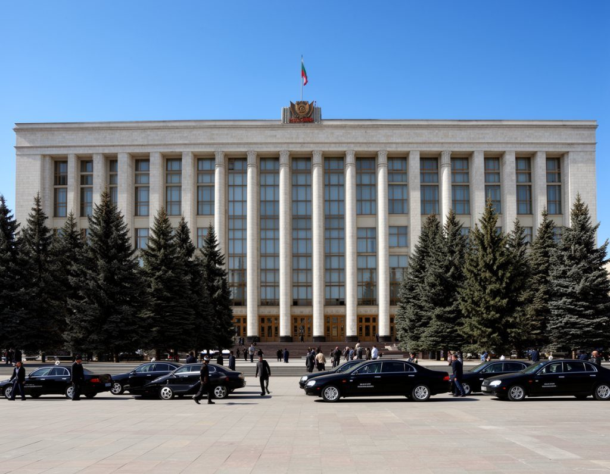

Money
Bishkek publishes its schools, health and welfare money in full; Talas will get a summary
Kyrgyzstan's 2027 draft sets aside 257.9 billion Kyrgyz som for the three, about 24.8 billion Iradi som. The ISEZ's last published budget spent roughly 10 billion on the equivalent lines, and a twentieth of it goes to a reserve nobody audits.

Kyrgyzstan's cabinet chairman presented the 2027 draft national budget on 17 November. It sets aside 257.9 billion Kyrgyz som together for education, health care and social protection. At the official cross rate of 9.61 Iradi som per 100 Kyrgyz som, that is about 24.8 billion Iradi som.
The ISEZ has no comparable document to read this week. The Ministry of Economy drafts the budget, the Governor's office sends it to the Mejlis in November, and only a summary is ever published. IradOne reported on Wednesday that Kyrgyzstan plans 105 billion som for schools and that Talas awaits its own chapter, and the Talas Herald reported the same today. The state broadcaster's headline gave the schools line alone, not the combined 257.9 billion, and neither report set the Iradi spending beside it. The government press office said on Wednesday that the 2027 draft "proceeds to the Mejlis in the usual way".
What the figures show
The ISEZ's 2026 budget spends 34.9 billion som against revenue of 32.4 billion. Education is about 12% of that spending, health about 8%, and transfers to the Pension Fund and allowances about 9%. Together the three come to roughly 10 billion som, a little over 10.1 billion on those shares. Kyrgyzstan's combined line, converted at the official rate, is about two and a half times that.
The Times does not suggest the two numbers measure the same thing. One is a 2027 draft and the other a 2026 budget. Kyrgyzstan's "social protection" may be drawn more widely or more narrowly than the ISEZ's allowances. The ISEZ budget covers the zone alone, not the tribal regions, and the Kyrgyz draft covers a different state.
The Iradi shares also understate what the state pays for schools and clinics. Public wages, about 34% of ISEZ spending, include teachers and doctors, and that money does not appear under the education or health lines. On the 34.9 billion total, wages come to about 11.9 billion som. How much of it goes to classrooms and wards is not in anything the public can read.
The same 2026 budget carries another line that the public cannot trace: the Governor's reserve fund, about 5% of spending, or roughly 1.7 billion som. It is unaudited. It is larger than any single share the Times can attribute to a school or a hospital in the summary.
What they say
The Times asked the Ministry of Economy's press secretary, Bekbolot Sherov, in writing on Wednesday when the 2027 summary would be published and whether it would break out wages by sector. He did not reply by the time of going to press. The minister, Dinara Usupova, whose ministry drafts the budget, was not asked to comment on the Kyrgyz figures.
Prof. Raisa Akmatova, an economist at Talas State University, said the comparison was useful only as a prompt for a better one. "Two totals in two currencies tell you who spends more, not who spends better," she said. "To compare you need the same definitions, per pupil and per patient, and you need the wage bill split out. A summary does not give you that."
Why it matters
The 2027 draft is an election-year budget, and the election is on 2 November 2027. The Mejlis, where the DPI holds 51 of 60 seats, normally passes the budget in December. Households have just seen the street rate for the dollar move well away from the official 8.40, and teachers' and nurses' pay is in som. They have reason to ask what the schools and clinics will get.
Bishkek has shown its draft in full, and its legislators and its press can read it line by line. The ministry could publish the education, health and welfare chapters of the 2027 draft with the wage bill split out, and could say whether the reserve fund will be audited this time. It could do both before the Mejlis votes.
Earlier report: Kyrgyzstan Plans 105 Billion Som for Schools; Talas Awaits Its Own Chapter (IradOne)
Earlier report: Bishkek sets 105bn som for schools; Talas has yet to see its own education chapter (Talas Herald)
The Times keeps its investigations free to read. If they are worth something to you, subscribe to the paper.